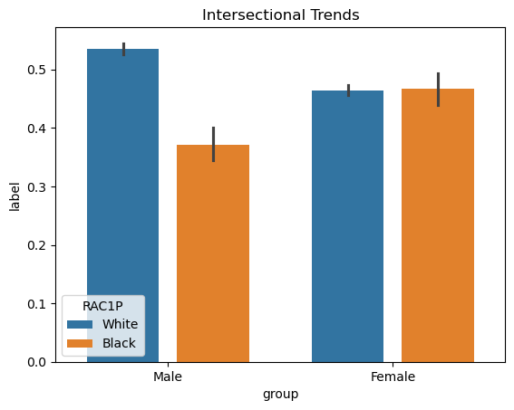

Goals: 1. Train a machine learning algorithm to predict whether someone is currently employed, based on their other attributes not including gender, and 2. Perform a bias audit of our algorithm to determine whether it displays gender bias.
In this blog post, I trained a machine learning classifier on PUMS data from the state of Connecticut to predict an individual’s employment status based on demographic features. After preparing the data with the folktables library, I experimented with a various classifier models, ultimately deciding on a Random Forest model whose performance I evaluated using metrics like accuracy, Positive Prediction Value, and False Positive/Negative Rates. I then conducted a bias audit by examining false positive rates (FPR), false negative rates (FNR), and positive predictive value (PPV) across the gender groups available in the data - Male and Female. I then plotted feasible FNRs & FPRs to visualize the relationship of error rates between groups, and understand how much one group’s error rate would have to change to match the others. Our results showed notable differences in error rates and PPVs between groups, highlighting areas where the model may inadvertently misclassify women more frequently.
from folktables import ACSDataSource, ACSEmployment, BasicProblem, adult_filterimport numpy as npSTATE ="CT"data_source = ACSDataSource(survey_year='2018', horizon='1-Year', survey='person')acs_data = data_source.get_data(states=[STATE], download=True)acs_data.head()
print(f"There are {df.shape[0]} individuals in the data for the state of CT")
There are 29029 individuals in the data for the state of CT
2. How Many Individuals Have a Target Label == 1 (i.e. How Many Individuals are Employed)?
print(f"Of the {df.shape[0]} in the data set, {(df['label'].mean() *100):.2f}% - or {df['label'].sum()} individuals - are employed")
Of the 29029 in the data set, 48.43% - or 14060 individuals - are employed
3. Of the Employed Individuals, How Many are Male (1) and How Many are Female (2)?
employed_by_group = df.groupby("group")["label"].sum()print(f"Of the 14060 employed individuals, {employed_by_group.iloc[0]} are male and {employed_by_group.iloc[1]} are female")
Of the 14060 employed individuals, 7169 are male and 6891 are female
4. In Each Group, What Proportion of Individuals Have Target Label Equal to 1 (i.e. Are Employed)?
proportion_employed_by_group = df.groupby("group")["label"].mean()print(f"According to the Data,{proportion_employed_by_group.iloc[0]*100: .2f}% of male individuals are employed and{proportion_employed_by_group.iloc[1]*100: .2f}% female individuals are employed")
According to the Data, 51.17% of male individuals are employed and 45.88% female individuals are employed
5. Intersectional Trends
# Since RAC1P Has Values > 2, we must filter to only 1.0 and 2.0df_filtered = df[(df["RAC1P"] ==1.0) | (df["RAC1P"] ==2.0)].copy()# Now, we convert RAC1P values to ints to match typedf_filtered["RAC1P"] = df_filtered["RAC1P"].astype(int)# Since I want to use categorical labels, and not just numbered labels, we use Pandas map function on a series# https://pandas.pydata.org/docs/reference/api/pandas.Series.map.htmldf_filtered["group"] = df_filtered["group"].map({1 : "Male", 2 : "Female"})df_filtered["RAC1P"] = df_filtered["RAC1P"].map({1 : "White", 2 : "Black"})proportion_employed_by_group = df_filtered.groupby(["group", "RAC1P"])["label"].mean()
group RAC1P
Female Black 0.466667
White 0.464758
Male Black 0.371805
White 0.535252
Name: label, dtype: float64
import seaborn as snsfrom matplotlib import pyplot as plt# Using seaborn barplot uses mean as default, which represents the proportional insights we are looking forsns.barplot(df_filtered, x ="group", y ="label", hue ="RAC1P", width=.8, gap=.2)plt.title("Intersectional Trends")
Text(0.5, 1.0, 'Intersectional Trends')

Training my model with different classifiers
# Include alternative classifiers from sklearnfrom sklearn.svm import SVCfrom sklearn.tree import DecisionTreeClassifierfrom sklearn.ensemble import RandomForestClassifier
Logistic Regression
# Logistic Regression Classifier (playing with polynomial features)# Discovered we can ass PolynomialFeatures to pipeline!from sklearn.preprocessing import PolynomialFeatures# https://scikit-learn.org/stable/modules/generated/sklearn.preprocessing.PolynomialFeatures.htmlmodel_sex_LR = make_pipeline(PolynomialFeatures(degree =2), StandardScaler(), LogisticRegression(max_iter=1000))model_sex_LR.fit(X_train.copy(), y_train)y_hat_LR = model_sex_LR.predict(X_test)# Calculate Overall ValuesTP_LR = ((y_hat_LR ==1) & (y_test ==1)).sum()FP_LR = ((y_hat_LR ==1) & (y_test ==0)).sum()TN_LR = ((y_hat_LR ==0) & (y_test ==0)).sum()FN_LR = ((y_hat_LR ==0) & (y_test ==1)).sum()PPV_LR = TP_LR / (y_hat_LR ==1).sum()FPR_LR = FP_LR / (TP_LR + FP_LR)FNR_LR = FN_LR / (TP_LR + FN_LR)print(f"Accuracy for Logistic Regression:{((y_hat_LR == y_test).mean())*100: .2f}%")print(f"PPV for Logistic Regression:{PPV_LR*100: .2f}%")print(f"Overall FPR for LR:{FPR_LR*100: .2f}%")print(f"Overall FNR for LR:{FNR_LR*100: .2f}%")
Accuracy for Logistic Regression: 82.57%
PPV for Logistic Regression: 79.65%
Overall FPR for LR: 20.35%
Overall FNR for LR: 12.74%
# Breaking down by subgroups is much easier if we use a Dataframedf_test_LR = pd.DataFrame(X_test, columns = features_to_use1)df_test_LR["group"] = group_testdf_test_LR["label"] = y_testdf_test_LR["predicted_value"] = y_hat_LRdf_test_LR["correct_prediction"] = df_test_LR["predicted_value"] == df_test_LR["label"]# Calculate correct prediction by groupdf_test_LR["correct_prediction"] = df_test_LR["predicted_value"] == df_test_LR["label"]print(f"\nAccuracy By Group: \n\n{df_test_LR.groupby(['group'])['correct_prediction'].mean()*100}")# Calculate true positives and false positives by groupdf_test_LR["true_positive"] = (df_test_LR["predicted_value"] ==1) & (df_test_LR["label"] ==1)df_test_LR["false_positive"] = (df_test_LR["predicted_value"] ==1) & (df_test_LR["label"] ==0)# Calculate PPV by groupTP_per_group_LR = df_test_LR.groupby("group")["true_positive"].sum()FP_per_group_LR = df_test_LR.groupby("group")["false_positive"].sum()PPV_per_group = TP_per_group_LR / (TP_per_group_LR + FP_per_group_LR)print(f"\nPPV By Group: \n{PPV_per_group *100}")# Calculate false positives by groupdf_test_LR["false_positive"] = (df_test_LR["predicted_value"] ==1) & (df_test_LR["label"] ==0) print(f"\nFPR By Group: \n\n{df_test_LR.groupby(['group'])['false_positive'].mean()*100}")# Calculate false negatives by groupdf_test_LR["false_negative"] = (df_test_LR["predicted_value"] ==0) & (df_test_LR["label"] ==1) print(f"\nFNR By Group: \n\n{df_test_LR.groupby(['group'])['false_negative'].mean()*100}")# Compute for statistical parity by group# Total individuals per groupper_group_total_LR = df_test_LR.groupby("group")["predicted_value"].count()# Total predicted positives per grouppredicted_positives_per_group_LR = df_test_LR.groupby("group")["predicted_value"].sum()# Calculate acceptance ratestatistical_parity_by_group_LR = (predicted_positives_per_group_LR / per_group_total_LR) *100print(f"\nAcceptance Rate (Employment) By Group: \n{statistical_parity_by_group_LR}%")
Accuracy By Group:
group
1 84.209040
2 81.011296
Name: correct_prediction, dtype: float64
PPV By Group:
group
1 83.887734
2 75.639764
dtype: float64
FPR By Group:
group
1 8.757062
2 13.313609
Name: false_positive, dtype: float64
FNR By Group:
group
1 7.033898
2 5.675094
Name: false_negative, dtype: float64
Acceptance Rate (Employment) By Group:
group
1 54.350282
2 54.653039
Name: predicted_value, dtype: float64%
Discussion:
By implementing the PolynomialFeatures preprocessing function/module, I was able to add polynomial feature adjustments directly into the model pipeline. By calculating all polynomial combinations of my features with a degree of 2, I achieved my best accuracy of 82.57%.
Accuracy for SVC: 82.41%
PPV for SVC: 78.79%
Overall FPR for SVC: 21.21%
Overall FNR for SVC: 11.55%
# Breaking down by subgroups is much easier if we use a Dataframedf_test_SVC = pd.DataFrame(X_test, columns = features_to_use1)df_test_SVC["group"] = group_testdf_test_SVC["label"] = y_testdf_test_SVC["predicted_value"] = y_hat_SVCdf_test_SVC["correct_prediction"] = df_test_SVC["predicted_value"] == df_test_SVC["label"]# Calculate correct prediction by groupdf_test_SVC["correct_prediction"] = df_test_SVC["predicted_value"] == df_test_SVC["label"]print(f"\nAccuracy By Group: \n{df_test_SVC.groupby(['group'])['correct_prediction'].mean()*100}")# Calculate true positives and false positives by groupdf_test_SVC["true_positive"] = (df_test_SVC["predicted_value"] ==1) & (df_test_SVC["label"] ==1)df_test_SVC["false_positive"] = (df_test_SVC["predicted_value"] ==1) & (df_test_SVC["label"] ==0)# Calculate PPV by groupTP_per_group_SVC = df_test_SVC.groupby("group")["true_positive"].sum()FP_per_group_SVC = df_test_SVC.groupby("group")["false_positive"].sum()PPV_per_group = TP_per_group_SVC / (TP_per_group_SVC + FP_per_group_SVC)print(f"\nPPV By Group: \n{PPV_per_group *100}")# Calculate false positives by groupdf_test_SVC["false_positive"] = (df_test_SVC["predicted_value"] ==1) & (df_test_SVC["label"] ==0) print(f"\nFPR By Group: \n{df_test_SVC.groupby(['group'])['false_positive'].mean()*100}")# Calculate false negatives by groupdf_test_SVC["false_negative"] = (df_test_SVC["predicted_value"] ==0) & (df_test_SVC["label"] ==1) print(f"\nFNR By Group: \n{df_test_SVC.groupby(['group'])['false_negative'].mean()*100}")# Compute for statistical parity by group# Total individuals per groupper_group_total_SVC = df_test_SVC.groupby("group")["predicted_value"].count()# Total predicted positives per grouppredicted_positives_per_group_SVC = df_test_SVC.groupby("group")["predicted_value"].sum()# Calculate acceptance ratestatistical_parity_by_group_SVC = (predicted_positives_per_group_SVC / per_group_total_SVC) *100print(f"\nAcceptance Rate (Employment) By Group: \n{statistical_parity_by_group_SVC}")
Accuracy By Group:
group
1 84.406780
2 80.500269
Name: correct_prediction, dtype: float64
PPV By Group:
group
1 83.324860
2 74.508864
dtype: float64
FPR By Group:
group
1 9.265537
2 14.308768
Name: false_positive, dtype: float64
FNR By Group:
group
1 6.327684
2 5.190963
Name: false_negative, dtype: float64
Acceptance Rate (Employment) By Group:
group
1 55.564972
2 56.132329
Name: predicted_value, dtype: float64
Discussion:
From what I could find on sklearn and online (this Medium article: https://medium.com/@myselfaman12345/c-and-gamma-in-svm-e6cee48626be) C - to put it generally - indicates how much we want to avoid misclassification on our training data. A low C value leads to low training error, and high C allows for more error on training data. However, minimizing C - and therefore training classification error - too far seems to lead to over fitting. As I dropped the C value below 1.0 (the default sklearn value) I found my classification accuracy begin to drop. Setting it too high led to the same effect. It seems that the “optimal” C value is context-dependent. Interestingly, my accuracy was very similary at a C value of 0.8 (82.35%) and 3.0 (82.41%). The default C value of 1.0 resulted in an 83.32% accuracy.
Extract predicitions on all test sets modeled with each classifier
Accuracy for Decision Tree: 83.11%
PPV for Decision Tree: 80.41%
Overall FPR for Decision Tree: 19.59%
Overall FNR for Decision Tree: 12.68%
# Breaking down by subgroups is much easier if we use a Dataframedf_test_DT = pd.DataFrame(X_test, columns = features_to_use1)df_test_DT["group"] = group_testdf_test_DT["label"] = y_testdf_test_DT["predicted_value"] = y_hat_DTdf_test_DT["correct_prediction"] = df_test_DT["predicted_value"] == df_test_DT["label"]# Calculate correct prediction by groupdf_test_DT["correct_prediction"] = df_test_DT["predicted_value"] == df_test_DT["label"]print(f"\nAccuracy By Group: \n{df_test_DT.groupby(['group'])['correct_prediction'].mean()*100}")# Calculate true positives and false positives by groupdf_test_DT["true_positive"] = (df_test_DT["predicted_value"] ==1) & (df_test_DT["label"] ==1)df_test_DT["false_positive"] = (df_test_DT["predicted_value"] ==1) & (df_test_DT["label"] ==0)# Calculate PPV by groupTP_per_group_DT = df_test_DT.groupby("group")["true_positive"].sum()FP_per_group_DT = df_test_DT.groupby("group")["false_positive"].sum()PPV_per_group = TP_per_group_DT / (TP_per_group_DT + FP_per_group_DT)print(f"\nPPV By Group: \n{PPV_per_group *100}")# Calculate false positives by groupdf_test_DT["false_positive"] = (df_test_DT["predicted_value"] ==1) & (df_test_DT["label"] ==0) print(f"\nFPR By Group: \n{df_test_DT.groupby(['group'])['false_positive'].mean()*100}")# Calculate false negatives by groupdf_test_DT["false_negative"] = (df_test_DT["predicted_value"] ==0) & (df_test_DT["label"] ==1) print(f"\nFNR By Group: \n{df_test_DT.groupby(['group'])['false_negative'].mean()*100}")# Compute for statistical parity by group# Total individuals per groupper_group_total_DT = df_test_DT.groupby("group")["predicted_value"].count()# Total predicted positives per grouppredicted_positives_per_group_DT = df_test_DT.groupby("group")["predicted_value"].sum()# Calculate acceptance ratestatistical_parity_by_group_DT = (predicted_positives_per_group_DT / per_group_total_DT) *100print(f"\nAcceptance Rate (Employment) By Group: \n{statistical_parity_by_group_DT}")
Accuracy By Group:
group
1 85.084746
2 81.226466
Name: correct_prediction, dtype: float64
PPV By Group:
group
1 85.039370
2 76.041667
dtype: float64
FPR By Group:
group
1 8.050847
2 12.990855
Name: false_positive, dtype: float64
FNR By Group:
group
1 6.864407
2 5.782679
Name: false_negative, dtype: float64
Acceptance Rate (Employment) By Group:
group
1 53.813559
2 54.222700
Name: predicted_value, dtype: float64
Discussion:
The Decision Tree Classifier achieved it’s highest accuracy of 83.12% with a max-depth of 12 and a min_samples_split - the minimum number of samples required to split an internal node - of 8. This classifier also ran the fasted of all the classifiers tested with parameters.
Random Forest
# Random Forest Classifiermodel_sex_RF = make_pipeline(StandardScaler(), RandomForestClassifier(n_estimators=400, max_depth=16))model_sex_RF.fit(X_train, y_train)y_hat_RF = model_sex_RF.predict(X_test)# Calculate Overall ValuesTP_RF = ((y_hat_RF ==1) & (y_test ==1)).sum()FP_RF = ((y_hat_RF ==1) & (y_test ==0)).sum()TN_RF = ((y_hat_RF ==0) & (y_test ==0)).sum()FN_RF = ((y_hat_RF ==0) & (y_test ==1)).sum()PPV_RF = TP_RF / (y_hat_RF ==1).sum()FPR_RF = FP_RF / (TP_RF + FP_RF)FNR_RF = FN_RF / (TP_RF + FN_RF)print(f"Accuracy for Random Forest:{((y_hat_RF == y_test).mean())*100: .2f}%")# Without Parameters: 80.92%, With Parameters: 83.74%print(f"Overall PPV for Random Forest:{PPV_RF*100: .2f}%")print(f"Overall FPR for Random Forest:{FPR_RF*100: .2f}%")print(f"Overall FNR for Random Forest:{FNR_RF*100: .2f}%")
Accuracy for Random Forest: 83.70%
Overall PPV for Random Forest: 80.81%
Overall FPR for Random Forest: 19.19%
Overall FNR for Random Forest: 11.82%
# Breaking down by subgroups is much easier if we use a Dataframedf_test_RF = pd.DataFrame(X_test, columns = features_to_use1)df_test_RF["group"] = group_testdf_test_RF["label"] = y_testdf_test_RF["predicted_value"] = y_hat_RFdf_test_RF["correct_prediction"] = df_test_RF["predicted_value"] == df_test_RF["label"]# Calculate correct prediction by groupdf_test_RF["correct_prediction"] = df_test_RF["predicted_value"] == df_test_RF["label"]print(f"\nAccuracy By Group: \n\n{df_test_RF.groupby(['group'])['correct_prediction'].mean()*100}")# Calculate true positives and false positives by groupdf_test_RF["true_positive"] = (df_test_RF["predicted_value"] ==1) & (df_test_RF["label"] ==1)df_test_RF["false_positive"] = (df_test_RF["predicted_value"] ==1) & (df_test_RF["label"] ==0)# Calculate PPV by groupTP_per_group_RF = df_test_RF.groupby("group")["true_positive"].sum()FP_per_group_RF = df_test_RF.groupby("group")["false_positive"].sum()PPV_per_group = TP_per_group_RF / (TP_per_group_RF + FP_per_group_RF)print(f"\nPPV By Group: \n{PPV_per_group *100}")# Calculate false positives by groupdf_test_RF["false_positive"] = (df_test_RF["predicted_value"] ==1) & (df_test_RF["label"] ==0) print(f"\nFPR By Group: \n\n{df_test_RF.groupby(['group'])['false_positive'].mean()*100}")# Calculate false negatives by groupdf_test_RF["false_negative"] = (df_test_RF["predicted_value"] ==0) & (df_test_RF["label"] ==1) print(f"\nFNR By Group: \n\n{df_test_RF.groupby(['group'])['false_negative'].mean()*100}")# Compute for statistical parity by group# Total individuals per groupper_group_total_RF = df_test_RF.groupby("group")["predicted_value"].count()# Total predicted positives per grouppredicted_positives_per_group_RF = df_test_RF.groupby("group")["predicted_value"].sum()# Calculate acceptance ratestatistical_parity_by_group_RF = (predicted_positives_per_group_RF / per_group_total_RF) *100print(f"\nAcceptance Rate (Employment) By Group: \n{statistical_parity_by_group_RF}")
Accuracy By Group:
group
1 85.706215
2 81.791286
Name: correct_prediction, dtype: float64
PPV By Group:
group
1 85.356957
2 76.496784
dtype: float64
FPR By Group:
group
1 7.937853
2 12.775686
Name: false_positive, dtype: float64
FNR By Group:
group
1 6.355932
2 5.433029
Name: false_negative, dtype: float64
Acceptance Rate (Employment) By Group:
group
1 54.209040
2 54.357181
Name: predicted_value, dtype: float64
Discussion:
While increasing max_depth to 16 itself led to the largest increase in classifier accuracy, adding more estimators - n_estimators set to 400 - to the model led to a further increase in accuracy from 83.55% to 83.74%. Random Forest achieved the highest prediction accuracy of all models tested.
Bias Measures:
A model is consider well calibrated if it reflects the same likelihood of positive prediction irrespective an individuals’ group membership. In other words, the model should be free from predictive bias. It appears that none of the models are well-calibrated as across all of them, the positive prediction rate of male employment is several percentage points higher than female employment. More specifically, the PPV ranges from anywhere between ~8%-9% across all of the models.
Across the board, again, the models do not satisfy error rate balance. The False Positive Rate (FPR) is higher for females across all four, whereas the False Negative Rate (FNR) is higher for males across all four models. Even further, the margin of difference between groups for FPR is much greater than that for FNR across all Models. The FPR difference between groups is at its lowest ~4.56% in our LR model, whereas the largest difference in FNRs is ~1.36%, also found in our LR model.
The best performing fairness metric across our models is statistical parity, with no models differing more than .7% in acceptance rate (i.e. employment prediction) between male and females.
Plotting Feasible FNR and FPR Rates
Using Random Forest Model because it had the best accuracy per group
Tuning the classifier threshold: Looking at the feasibility curves for males and females, if we set the threshold so that both groups have an FPR of 0.15, the male curve corresponds to an FNR of 0.25, while the female curve corresponds to an FNR of 0.40. Thus, to achieve the same FPR across groups, we must allow the female group’s FNR to increase from 0.25 to 0.40, a difference of 15%.
Concluding Discussion:
What groups of people could stand to benefit?
This model predicts whether an individual is employed, so it could benefit recruiting agencies or HR departments seeking to identify jobseekers or allocate training resources - specifically understanding what feature groups may be searching for a job/have more possible unemployed candidates available to interview.
Impact of deploying model?
From the bias audit, we see differences in false positive and false negative rates across groups. If deployed widely, these disparities could systematically disadvantage certain populations—for instance, if a higher false negative rate leads to fewer recognized as “employed,” those individuals might miss job opportunities or loans. Conversely, higher false positives could unfairly label individuals as employed when they are not, whereas false negatives could mean that hiring/search resources are allocated to the wrong demographic areas, disadvantaging those who don’t fit the template of an employed/unemployed individual. Even more, the differences in the bias audit reveal the way in which employment data is a proxy for historical prejudice - and in my case, specifically gender-based hiring prejudice - which could lead to reinforced stereotypes of who is “employable” and who is not.
Does the Model Display Bias?
From the bias audit (examining accuracy, PPV, FNR, and FPR by group), we see that the model’s performance differs between males and females for several fairness criterion. For example, it appears that none of the models are well-calibrated as across all we see the positive prediction rate of male employment is several percentage points higher than female employment. More specifically, the PPV ranges from anywhere between ~8%-9% across all of the models. There is also error rate imbalance: the False Positive Rate (FPR) is higher for females across all four, whereas the False Negative Rate (FNR) is higher for males across all four models. Even further, the margin of difference between groups for FPR is much greater than that for FNR across all Models. The FPR difference between groups is at its lowest ~4.56% in our LR model, whereas the largest difference in FNRs is ~1.36%, also found in our LR model. This could lead to prejudicial assumptions which have harmful effects on fair hiring practices. For instance, if one group has a statistically higher false negative rate, that group may be systematically overlooked for certain opportunities.
Further Concerns?
The model analyzed here is quite complex. Specifically, it involves the correlation/scoring of a large set of features, and classifier/modeling methods that are not very accessible. In other words, it isn’t a very transparent model, and that can lead to a lot of mistrust about how the decisions are being made and why. I also want to know more about where the data is being collected in a state, what areas/communities it is taken from, and how representative or random are those samples. To address these issues, we could continue ollect more diverse data, and promote education and transparency initiatives about Machine Learning. Furthermore, it is always important to include human oversight as a “second set of eyes” in decisions made about another person’s life from data.